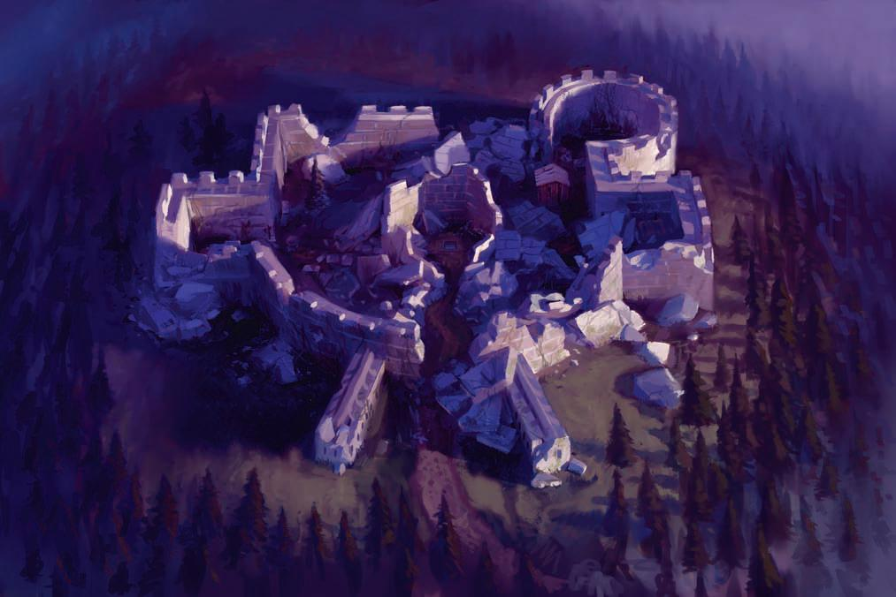
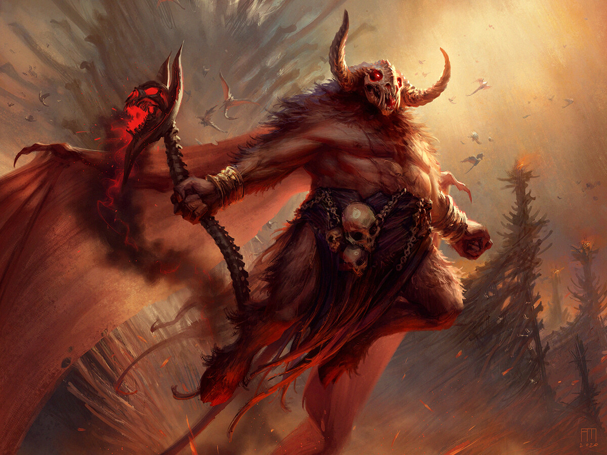

Realms, both wondrous and dire, border the world. One such realm is the Shadowfell. Although not inherently evil, the Shadowfell is fraught with dangers, and the barrier between worlds can be thin. Sometimes the darkness breaks into the light.
Nearly two hundred years ago, a cult of the demon prince Orcus purposely created such a gap, connecting one of Orcus’s unholy Shadowfell sites to the world. Skeletons, zombies, and fouler creatures flooded thought the rift into the light of day. The empire of Nerath dispatched legionnaires to eliminate the threat. The empire’s soldiers destroyed the undead, sealed the opening, and built a keep to watch over the location and contain the threat. This is the site known as the Keep of the Shadowfell.
Decades of peace followed, and the village of Winterhaven arose within sight of the keep. Eventually, the great fort fell into ruins and its grand purpose was forgotten. Today, it is seen as a harmless tumble of stone and wood. If only that were true.
Time passes, and empires fall, and even Nerath wasn’t immune to the ravages of time. The once-great human empire collapsed almost a century ago, and only memories of its glory remain. Deep within the ruins of the keep, the magic seal crafted began to erode even this powerful magic. Moreover, the cult of Orcus has returned to the site, intent on fishing what its ancient brethren started.
The cult seeks to reopen the rift to the Shadowfell. However, the magic seal has so far frustrated the cult’s intentions. Time, however, is on the side of the cult. Unless the cult is stopped, the seal will collapse and the passage into the Shadowfell will be opened anew. If that happens, Winterhaven will face the threat alone. Leagues of dangerous roads separate the villages from its closest neighbors, and the place has always stood as a point of light in the ever-growing darkness. Even so, Winterhaven won’t stand long against endless swarms of revenging undead. The cult of Orcus seeks to open the rift, establish a foothold, and launch father atrocities against the world at large.
